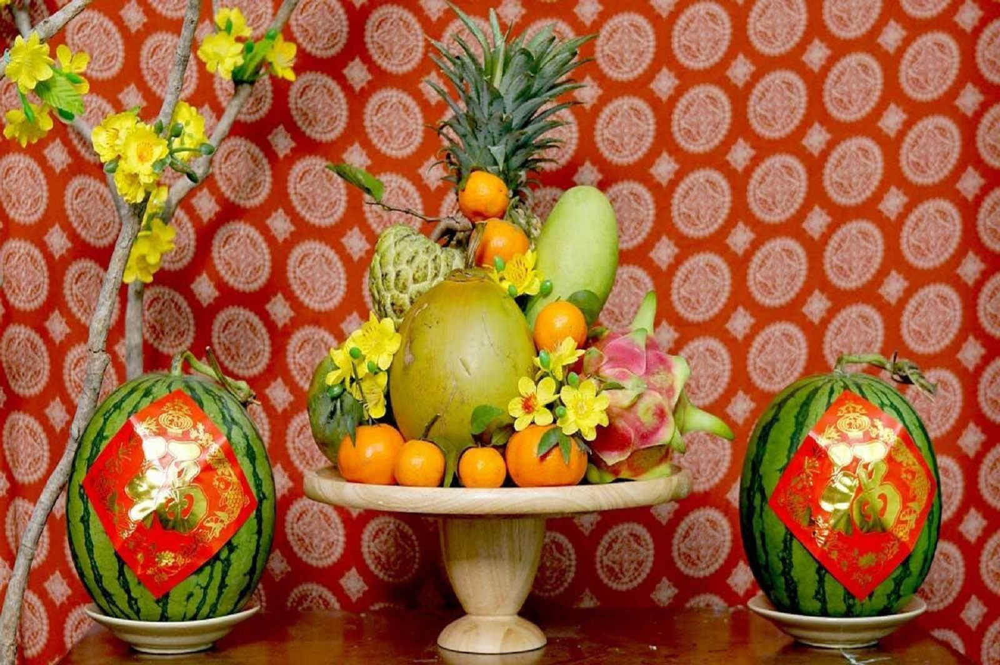

THỰC ĐƠN NGÀY LỄ
Dịp lễ Tết
Tết chính là thời điểm thích hợp nhất để bất kỳ một du khách quốc tế nào muốn tìm hiểu về văn hóa của Việt Nam. Bởi lẽ, người Việt rất coi trọng tín ngưỡng thờ phụng tổ tiên và Tết là dịp thể hiện rõ nét nhất điều này. Ẩm thực ngày Tết đều mang ý nghĩa tỏ lòng thành kính của con cháu dâng lên tổ tiên, ông bà đã khuất, khấn vái mời ông bà về sum vầy với gia đình đôi ba ngày Tết, cũng như cầu mong tổ tiên phù hộ xua tan điều xấu và mang đến may mắn trong năm mới.
Dịp cúng giỗ
Mâm cơm cúng giỗ tổ tiên là một nét đẹp văn hóa đặc trưng của mỗi vùng miền. Tổ chức đám giỗ là một trong những phong tục tập quán của người Việt từ xưa đến nay. Ngày giỗ được tính theo Âm lịch, nhằm để tưởng nhớ và thể hiện tấm lòng thành kính của người còn sống dành cho người đã khuất. Tùy vào văn hóa vùng miền, vào hoàn cảnh của mỗi gia đình, mỗi người mà người ta cũng chuẩn bị những mâm cỗ cúng giỗ với các món ăn và những lễ nghi khác nhau.
Dịp lễ hội , tiệc tùng
Tiệc tùng có nhiều loại khác nhau, tại đây cũng cho thấy rõ nhất văn hóa ẩm thực người Việt cũng như một số phong tục, dù là tiêc cưới, tiệc nhậu, tiệc chúc mừng,... thì tất cả đều được chuẩn bị trên bàn ăn lớn với nhiều món ăn khác nhau. Tuy nhiên theo truyền thống thường là một dạng cỗ với nhiều món ăn mặn, nem, rau, nộm, món tráng miệng, và rượu hoặc bia uống kèm. Ngày nay tiệc có thể sử dụng một số hình thức cách tân như tiệc đứng với các món ăn kiểu Âu, tiệc cơ bản với những món nấu theo trọng tâm (như thuần món cá, thịt chó, thịt bò, thịt dê).Dịp lễ Tết |
|
|
|
Dịp cúng giỗ |
|
|
|
Dịp lễ hội , tiệc tùng |
|
||